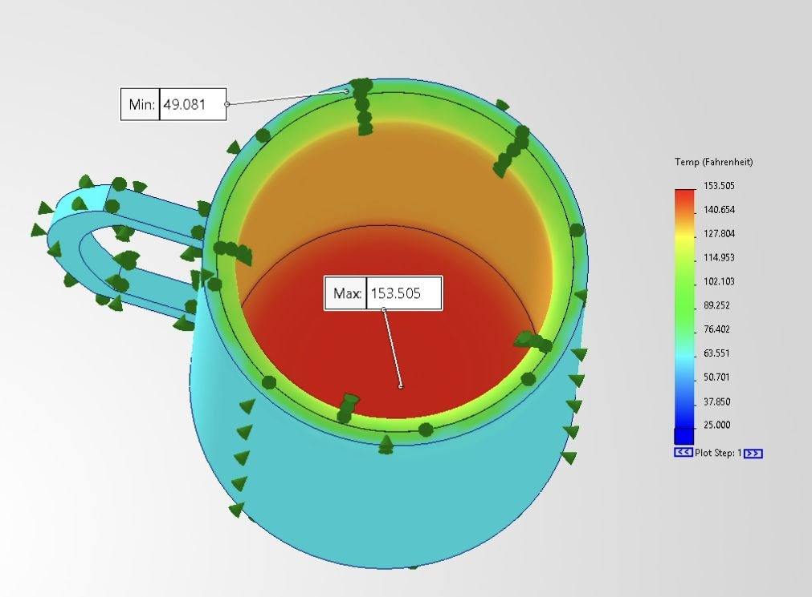
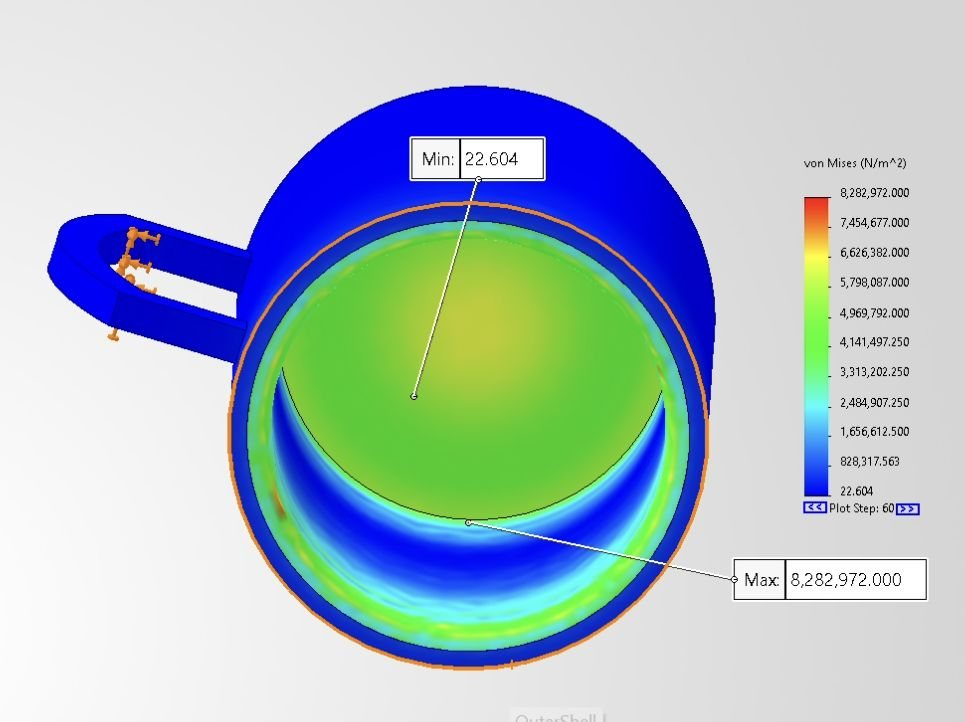
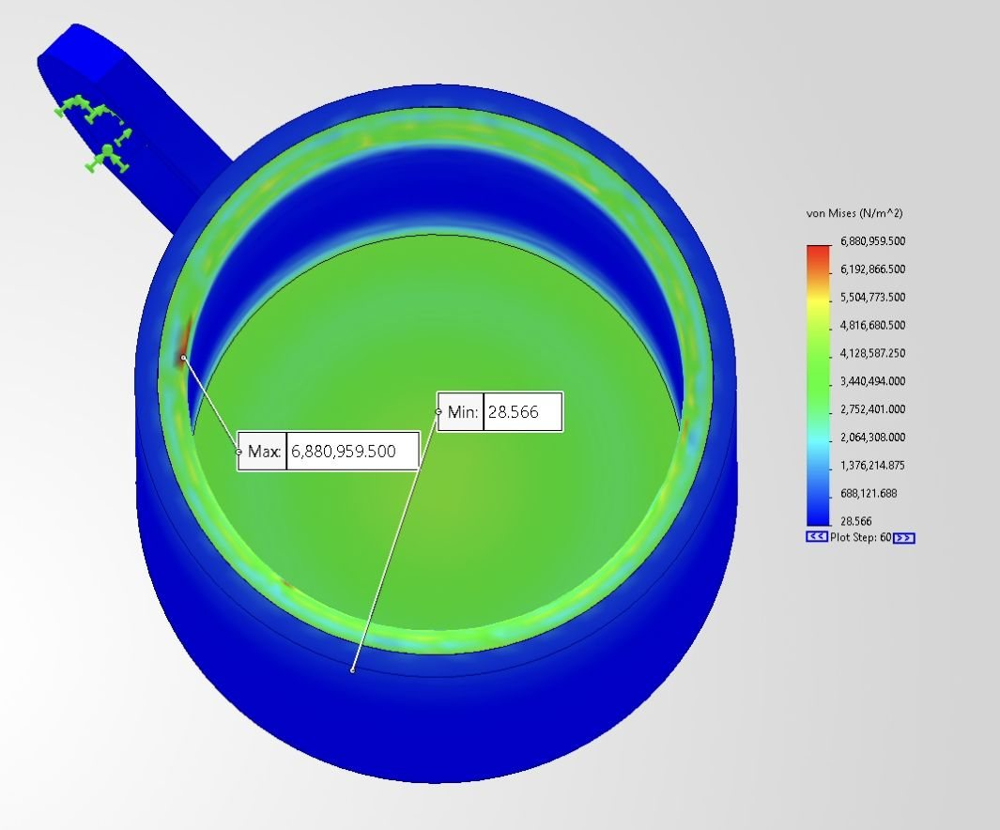
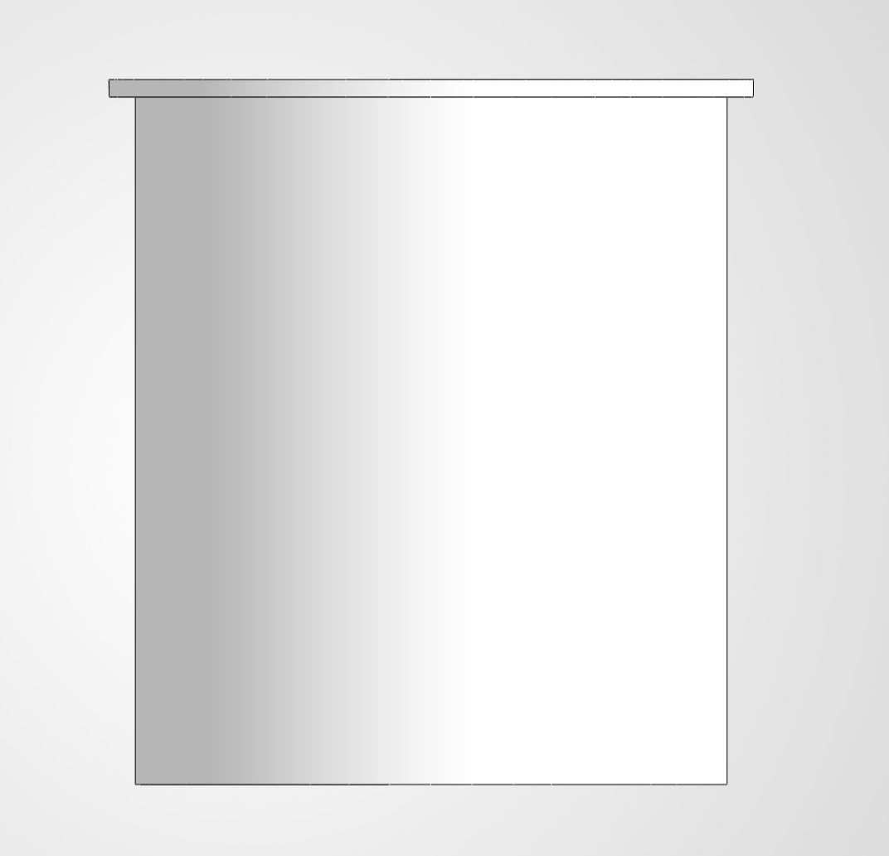
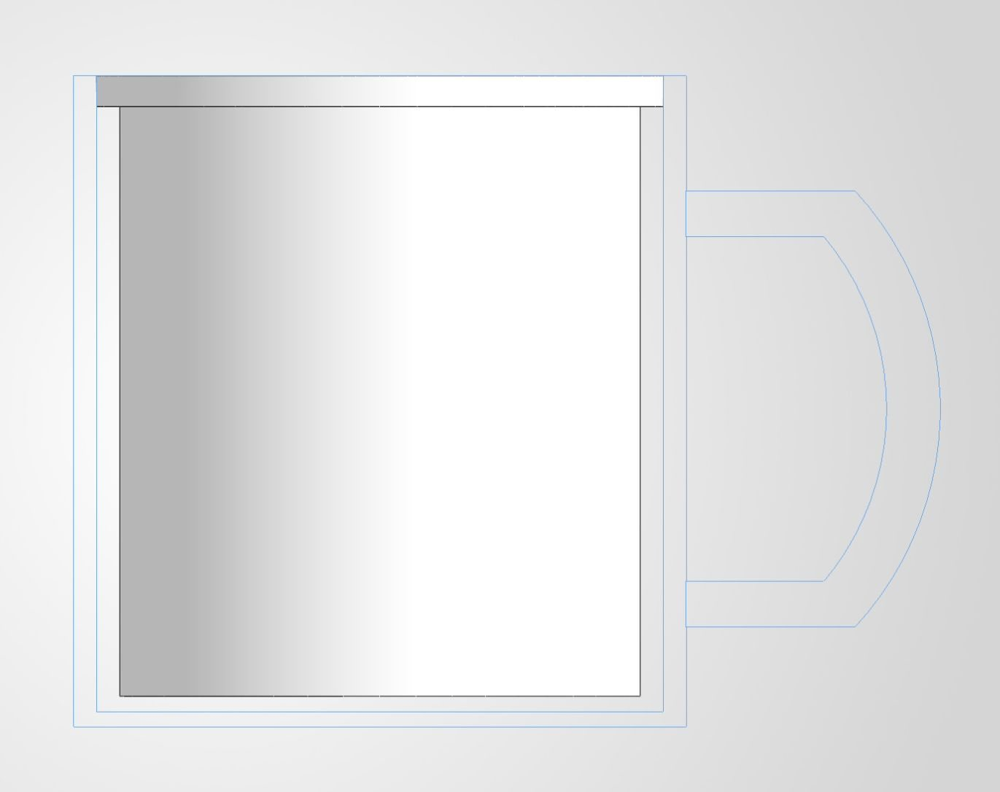
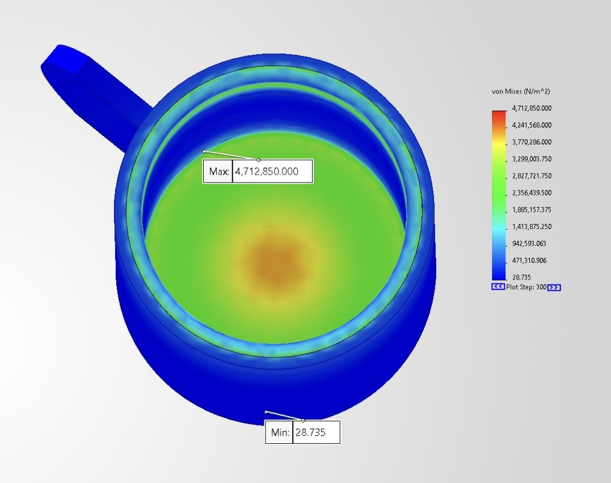
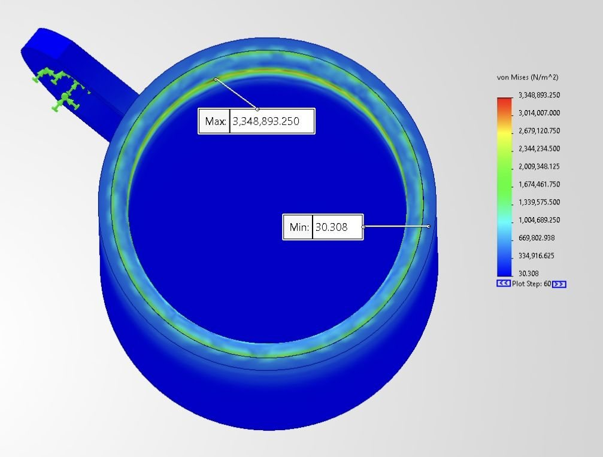

Modeled a two-layer mug with a ceramic outer shell, stainless steel inner liner, and insulating air gap. Simulations evaluated cooling and thermal stress under different convection conditions.


Simulation setup
- Initial mug temperature: 175°F
- 300-second transient thermal study
- 5-second nonlinear stress time step
- Outer surfaces exposed to convection
23W/m²K air convection
350W/m²K water convection
300 sStudy duration
304 SSInner liner
CeramicOuter shell
Stress concentration reduction
Geometry changes were used to reduce thermally induced stress peaks.




Design changes
Doubled the inner-liner lip thickness and added fillets at the liner base to reduce sharp stress concentration locations.

